Our Poké
I'm a paragraph. Click here to add your own text and edit me. It's eay. Just click "Edit Text" or double click me to add your own content and make changes to the font.
I'm a paragraph. Click here to add your own text and edit me. It's eay. Just click "Edit Text" or double click me to add your own content and make changes to the font.
 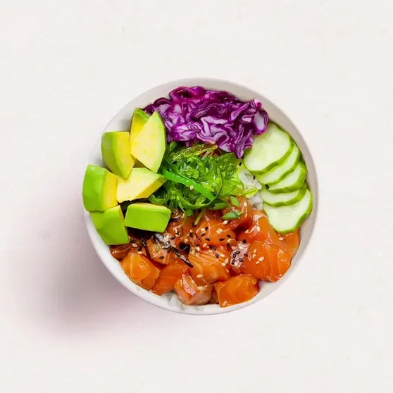
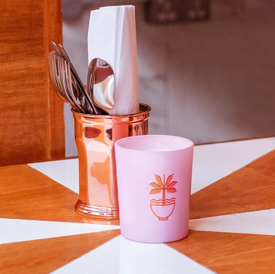
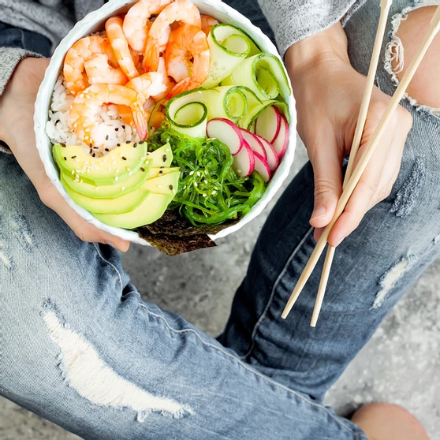
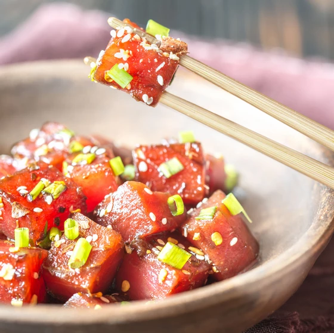
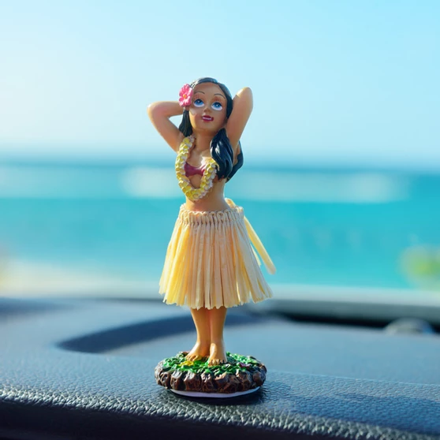
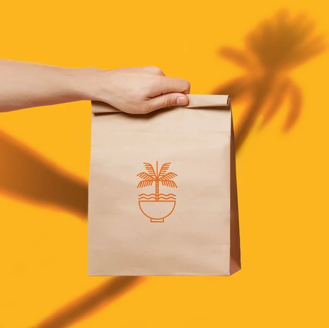
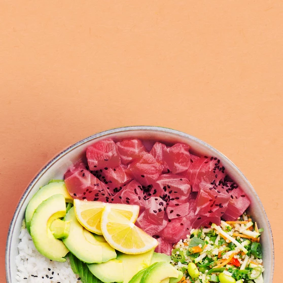
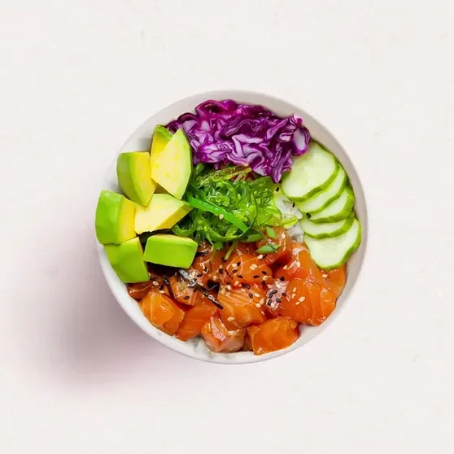
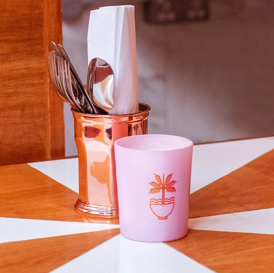
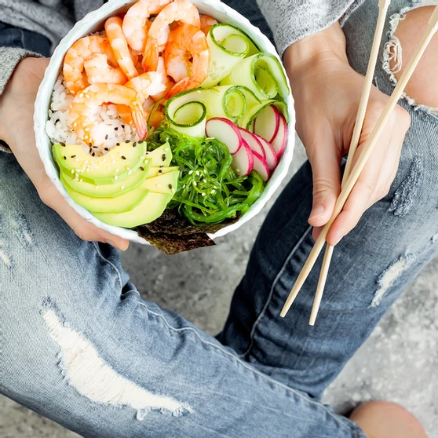
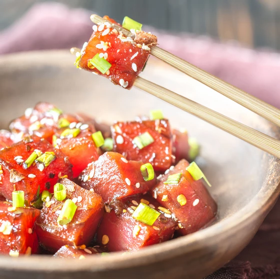
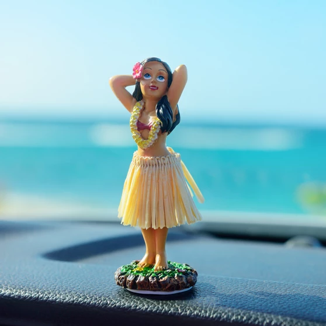
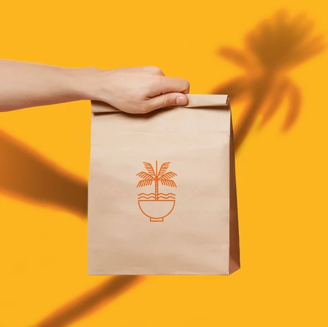
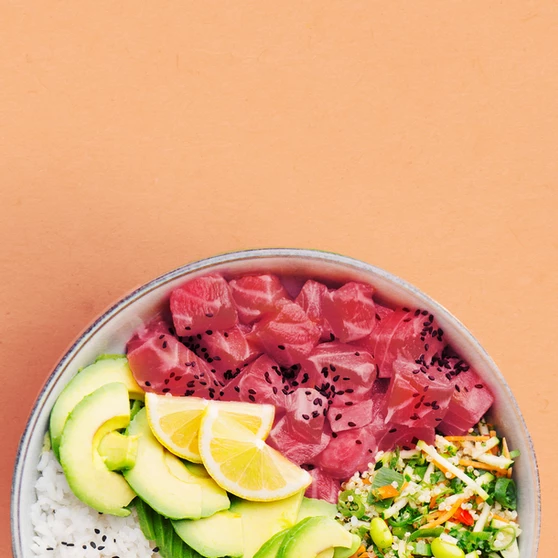
I'm a paragraph. Click here to add your own text and edit me. Let your users get to know you.